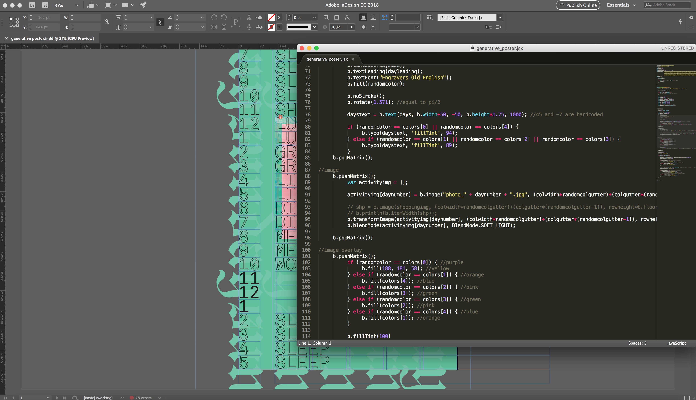
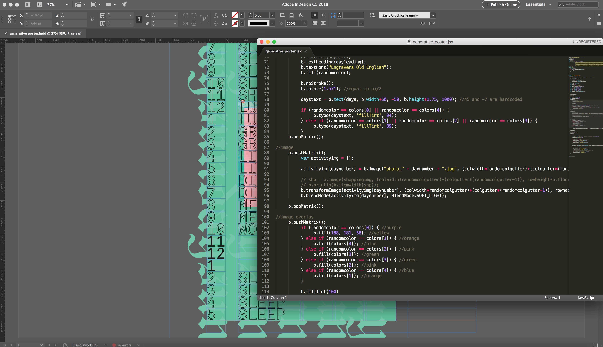

Weekly Schedule
Weekly Schedule is a generative poster series made with basil.js that visually represents one's routine in a week, day-by-day.
Winter 2017
Poster Logic
Each poster lists out by hour a person's activity throughout a particular day of the week, taking into consideration what is considered a "routine" event versus an event that's unique. For example, taking a class in the afternoon every Wednesday may be considered routine, whereas going to a concert on Friday night is something that doesn't happen every week. Those unique events stand out and are given more visual emphasis compared to the weekly routine occurences, as well as photos that represents the events.
Working with basil.js
I utilized basil.js and Adobe InDesign to generate a variety of randomized layouts, playing with color, placement of photos, and data input from an external spreadsheet. Prior to moving forward with basil.js, I manually created posters in InDesign that allowed the text and photos to interact differently in order to determine a layout that I felt could convey my concept clearly while still allowing the code to generate randomized placements.
 

Post-Project Thoughts
As my first project using basil.js, I feel that Weekly Schedule was successful in teaching me the limits of designing with code and the situations in which code can be beneficial in my design process. Working with data files in this project especially makes datasets considerably easier to design for in the future, while also helping me keep in mind the interaction of type and image when designing poster series. Weekly Schedule ultimately excites me more about creating generative layouts with code and opens up a lot of doors for me when considering implementation of code in my design process.